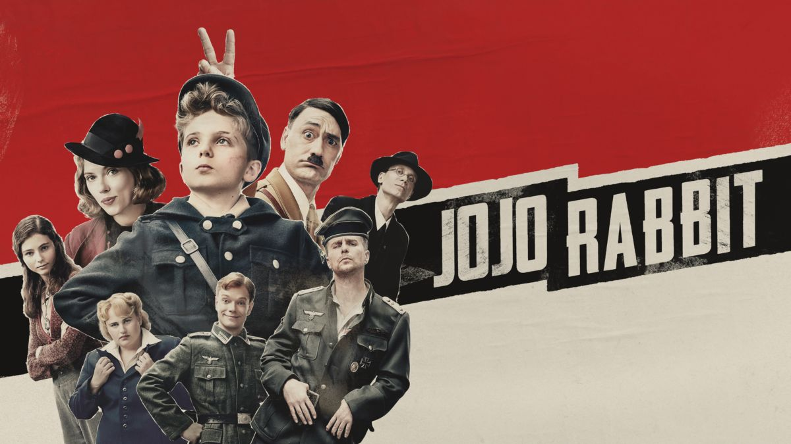

Durante a Segunda Guerra Mundial, Bruno, um garoto de oito anos, e sua família saem de Berlim para residir próximo a um campo de concentração, onde seu pai acaba de se tornar comandante. Infeliz e solitário, ele vagueia fora de sua casa e certo dia encontra Shmuel, um menino judeu de sua idade. Embora a cerca de arame farpado do campo os separem, os meninos começam uma amizade proibida.
Data de lançamento: 12 de setembro de 2008
Jojo é um garoto alemão solitário que descobre que sua mãe está escondendo uma garota judia no sótão. Ajudado apenas por seu amigo imaginário, Adolf Hitler, Jojo deve enfrentar seu nacionalismo cego enquanto a Segunda Guerra Mundial prossegue.
Data de lançamento: 6 de fevereiro de 2020
Conheça a história da amizade entre Anne Frank e Hannah Goslar. Desde a ocupação nazista em Amsterdã ao angustiante reencontro das garotas em um campo de concentração.
Data de lançamento: 4 de fevereiro de 2021
Antes dos Estados Unidos participarem da Primeira Guerra Mundial, alguns jovens americanos foram voluntários no exército francês. Posteriormente, eles se tornaram os primeiros pilotos de combate americanos e formaram o esquadrão conhecido como "Lafayette Escadrille". O trabalho e o heroísmo desses jovens os transformaram em verdadeiras lendas.
Data de lançamento: 22 de setembro de 2006
Acompanhe a história de Desmond T. Doss, um médico do exército americano que, durante a Segunda Guerra Mundial, se recusa a pegar em armas. Durante a Batalha de Okinawa ele trabalha na ala médica e salva cerca de 75 homens.
Data de lançamento: 26 de janeiro de 2017
Na Primeira Guerra Mundial, dois soldados britânicos recebem ordens aparentemente impossíveis de cumprir. Em uma corrida contra o tempo, eles precisam atravessar o território inimigo e entregar uma mensagem que pode salvar 1.600 de seus companheiros.
Data de lançamento: 16 de janeiro de 2020
Depois de perder a mãe e a casa para as tropas invasoras alemãs, Arturs encontra certo consolo em se juntar ao exército. No entanto, a guerra não é nada como ele imaginou.
Data de lançamento: 8 de novembro de 2019